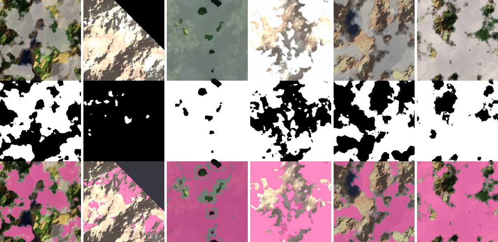
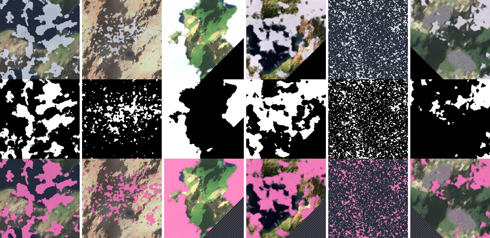
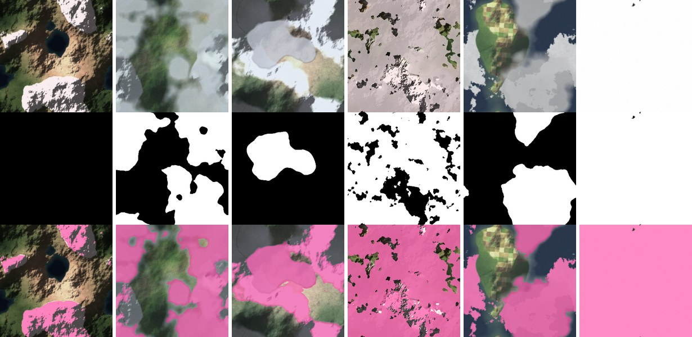
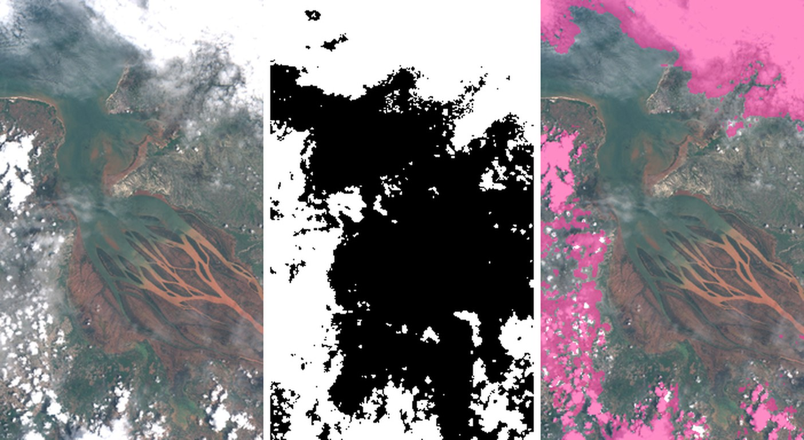

Проверка качества нейросети
Отчёт создан 2026-10-27 18:58:22. Порог отсева: 75 %. Модель обучена 2026-10-20 20:02:14, настоящих размеченных пикселей в обучении: 61004.
Эти числа получены на 300 учебных снимках, которых сеть не видела при обучении: океан, побережье, лес и поля, пустыня, город. Это нарисованные программой снимки, а не настоящие. На снимках Спутникса числа будут другими — проверьте сеть на них (см. конец отчёта).
Сеть и простое правило
Простое правило без ИИ: «пиксель — облако, если он ярче уровня 0,60» (уровень подобран так, чтобы правило работало как можно лучше).
| снимков | средняя ошибка, п.п. | смещение, п.п. | верных пикселей | верных решений | хороших удалено | облачных оставлено | |
|---|---|---|---|---|---|---|---|
| нейросеть, обычные снимки | 300 | 1,7 | -0,4 | 97,6 % | 99,0 % | 1 из 225 | 2 из 75 |
| простое правило, обычные снимки | 300 | 7,4 | -1,3 | 91,1 % | 95,0 % | 6 из 225 | 9 из 75 |
| нейросеть, снег и лёд | 90 | 14,4 | 14,0 | 82,6 % | 88,9 % | 9 из 66 | 1 из 24 |
| простое правило, снег и лёд | 90 | 16,3 | 6,5 | 77,2 % | 91,1 % | 3 из 66 | 5 из 24 |
п.п. — процентные пункты. Смещение со знаком «+» значит, что облачность завышается.
Где сеть ошибается
Каждая точка — один снимок. На диагонали — идеальные ответы.
Пунктир — порог. Крупные малиновые точки — неверное решение.
| местность | снимков | средняя ошибка | смещение | верных пикселей |
|---|---|---|---|---|
| океан | 60 | 0,5 | -0,2 | 99,1 % |
| побережье | 60 | 1,4 | -0,7 | 98,1 % |
| лес и поля | 60 | 1,8 | -1,6 | 97,7 % |
| пустыня | 60 | 2,8 | 0,9 | 96,0 % |
| город и поля | 60 | 2,1 | -0,5 | 97,0 % |
| горы со снегом | 30 | 9,1 | 8,3 | 86,7 % |
| зима (всё в снегу) | 30 | 17,1 | 16,5 | 80,6 % |
| морской лёд | 30 | 17,1 | 17,0 | 80,6 % |
Снег и лёд сеть принимает за облака.
Белый снег и белое облако на обычной цветной фотографии почти неразличимы. Настоящие спутники различают их в инфракрасных каналах, которых в обычном снимке нет. Что с этим делать — в GUIDE_RU.md, раздел «Чего сеть не умеет».
Примеры
В каждой колонке сверху вниз: снимок, правильная маска облаков, ответ сети (облака закрашены).
Самые большие ошибки на обычных снимках

Случайные обычные снимки

Снег и лёд

Устойчивость
Те же снимки, но испорченные: проверяем, не «ломается» ли сеть от плохих условий съёмки.
| что сделали со снимком | средняя ошибка, п.п. | смещение, п.п. | верных решений |
|---|---|---|---|
| ничего | 1,7 | -0,4 | 99,0 % |
| темнее на 30 % | 5,5 | -5,3 | 94,0 % |
| светлее на 30 % | 3,0 | 2,3 | 97,0 % |
| сильное сжатие JPEG | 2,2 | -0,4 | 98,0 % |
| вдвое меньше размер | 2,3 | -0,6 | 97,0 % |
Настоящий снимок Sentinel-2
Один настоящий снимок спутника Sentinel-2 (устье реки, суша и море). Эталонная маска получена другим алгоритмом — s2cloudless, который видит 10 спектральных каналов, а не три цвета, и специально расширяет облака с запасом. Поэтому это сравнение двух алгоритмов, а не сети с истиной.
Эталон: 45,6 %, наша сеть: 26,5 %, совпадение по пикселям: 80,2 %. Плотные и кучевые облака сеть находит, полупрозрачную дымку — нет: на трёх цветовых каналах она почти не отличается от земли.

Слева снимок, в середине эталонная маска, справа ответ сети (облака закрашены).
| часть снимка | эталон | сеть |
|---|---|---|
| ряд 1, левая половина | 59,5 % | 24,6 % |
| ряд 1, правая половина | 80,1 % | 67,5 % |
| ряд 2, левая половина | 42,8 % | 20,2 % |
| ряд 2, правая половина | 4,9 % | 0,0 % |
| ряд 3, левая половина | 56,9 % | 37,4 % |
| ряд 3, правая половина | 29,5 % | 9,2 % |
Скорость
Один снимок обрабатывается в среднем за 0,20 с (без чтения файла с диска).
Как проверить сеть на снимках Спутникса
1. Положите снимки в data/incoming и запустите python process.py --dry-run — файлы не изменятся.
2. Сравните проценты со своей оценкой на глаз. Найдите снимки, где сеть ошиблась сильнее всего.
3. Разметьте их во вкладке «Разметка и дообучение» и дообучите сеть.
4. Если есть полные маски (белое — облако), положите их в data/masks и запустите этот отчёт ещё раз.